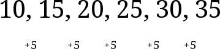
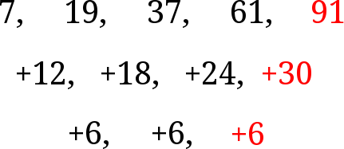

Polynomial Pattern Predicting
We've all seen a question like this before: What is the next number in the sequence?
$7, 19, 37, 61, ...$
The usual way to approach this is to guess and check, or try to find a pattern. It usually is a hard process. Wouldn't it be better if there was a systematic way to accomplish this?
Derivation
How do you derive something like this? Lets start with linear equations.
It's pretty obvious that the difference between terms in linear equations are the same. Lets try this for higher-degree polynomials, like quadratics. I'll demonstrate with a simple one, $x^2$.
$4, 9, 16, 25, ...$
The differences between each of the terms is as follows:
$3, 5, 7, 9, ...$
That's a linear equation. Do you see a pattern? Lets try the same thing with $x^3$.
$7, 19, 37, 61, ...$
This isn't a linear equation. Let's go another layer down and find the differences between these terms.
$12, 18, 24, ...$
This is a linear equation with a constant addition of $6$. This shows that if we dig long enough, you can get a linear equation. But where is all of this going? How can we predict the next term of a sequence with this information? Because we know that we are adding a constant term at the bottom of the ladder, if we keep adding the numbers together until you get to the top, you'll get the next value. The image might clear it up a bit.
So there it is. A systematic way to find the next terms in a polynomial. I've written some code to do this, it's right here.
Thanks for reading, and wait for the next post!